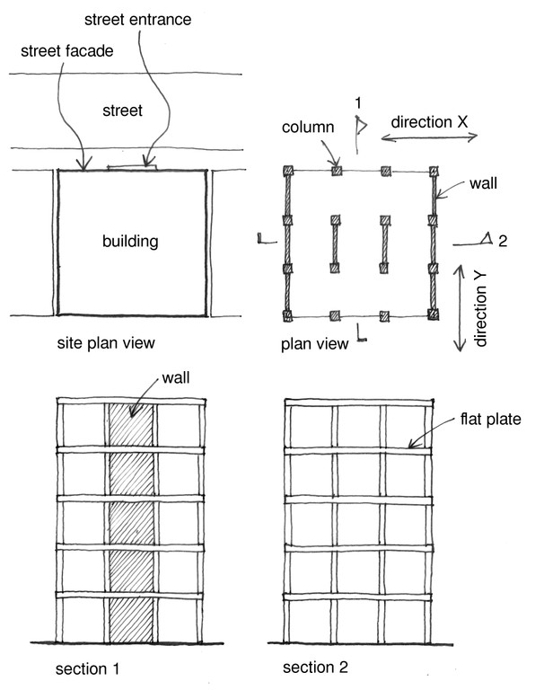

Dirección
El atributo de dirección pretende identificar dos direcciones principales horizontales de la planta del edificio . Es posible especificar diferentes Sistemas resistentes a cargas laterales (LLRS) y el correspondeinte Material del sistema en dos direcciones llamados dirección X y dirección Y; estos sistemas se denominan sistemas híbridos o sistemas mixtos a menudo. Cuando sea posible especificar direcciones, la Dirección X es paralela a la calle y la direction Y es perpendicular (orthogonal) a la calle. En algunos casos no es posible identificar la dirección X y dirección Y - por lo tanto el usuario puede seleccionar Dirección sin especificar.
Note que otros tipos de sistemas híbridos pueden describirse mediante el atributo Sistemas híbridos resistentes a cargas laterales , que debe aplicarse en uno de los siguientes casos: a) hay más de un LLRS en el edificio , pero no hay una distinción clara entre LLRSs en direcciones X e Y , o b ) sólo hay una LLRS , pero dos o más materiales de los LLR se utilizan en diferentes partes del edificio.

Un edificio que muestra posible orientación para direcciones X e Y
EJEMPLO 1: Un edificio tiene dos LLRSs diferente : reforzado placa plana de hormigón ( losa y la columna del sistema) paralelo a la calle , y se refuerza el sistema de muro de hormigón perpendicular a la calle , como se muestra a continuación. En este caso, la dirección X (paralela a la calle) está asociado con un sistema de placa plana ( LFLS ) (véase la Sección 2 ) , y la dirección Y (perpendicular a la calle ) tiene asociado un sistema de pared ( LWAL ) (véase la Sección 1 ).

EJEMPLO 2: El atributo de dirección puede ser usado para describir un LLRS híbridos de Chile , con marcos de hormigón armado en la dirección longitudinal (dirección X ) y mampostería confinada en dirección transversal (dirección Y) . Se supone que la dirección X ( paralela a la calle ) es la dirección longitudinal debido a la entrada a las unidades de vivienda individuales es en esa dirección (M. O. Moroni Yadlin).


EJEMPLO 3: El atributo de dirección puede ser usado para describir un sistema híbrido de Chile, donde se utiliza mampostería confinada en una dirección y muros de corte de hormigón reforzado en otra dirección (Moroni, Gomez, and Astroza, World Housing Encyclopedia Report 8). La foto muestra a un edificio dañada por el terremoto y el dibujo muestra un plan de construcción típica (no relacionados con el edificio que aparece en la foto ).